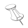

| Touch/click the printer icon in the article display window. The entire article will be printed even if it runs over multiple pages. |
|
Enter one or more search terms into the text entry field beside the loupe. Then touch/click the loupe icon to start the search. All publications available in the archive will be searched for the search term(s). A list of articles matching the search term(s) is shown in a window. Touch/click the desired article in the list: the corresponding publication is loaded and the article is presented in a window. may be obtained like this: Touch/click the search filed - a window with more options opens - touch/click the question mark icon. |
| Touch/click the TOC icon. |
| a) Using the page navigation buttons: | |
 Touch/click an icon |
|
| 2 arrows left: flip to the document's first page | |
| Arrow left: flip 1 page backwards | |
|
Arrow right: flip 1 page forward |
| 2 arrows right: flip to the document's last page | |
| Beside the arrows, a page number entry field may be found which lets you flip directly to a page number. | |
| b) Using the finger : | |
| Touch a page with a finger and move to left or right. | |
| c) Using the pages scroll list: | |
| Touch/click the button to show the list of pages. Touch and move the page icons up or down. Touch/click the desired page. |
|
| a) PDF of the entire document: | |
| Touch/click the button to download/show the document PDF. | |
| a) PDF of a single page: | |
| Touch/click the button to download/show a page PDF. The PDf for the current, left most page will be shown. | |
|  | Touch/click the icon and a window containing more information will be shown. |